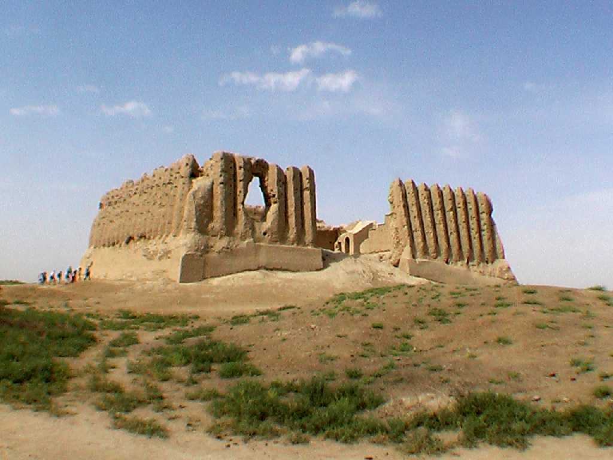
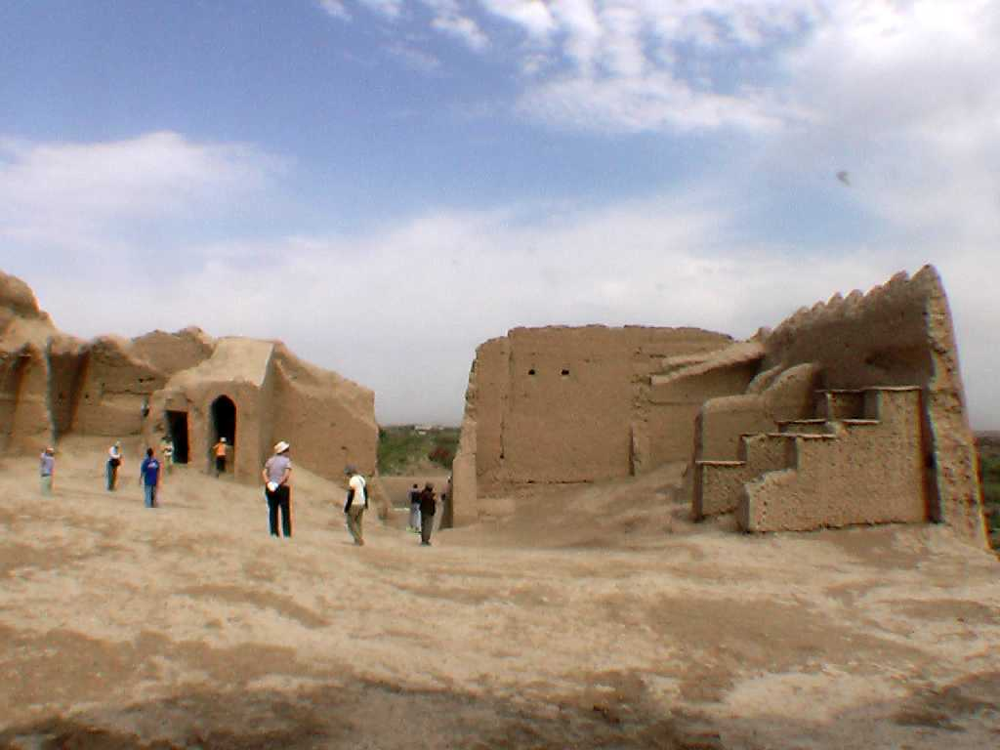
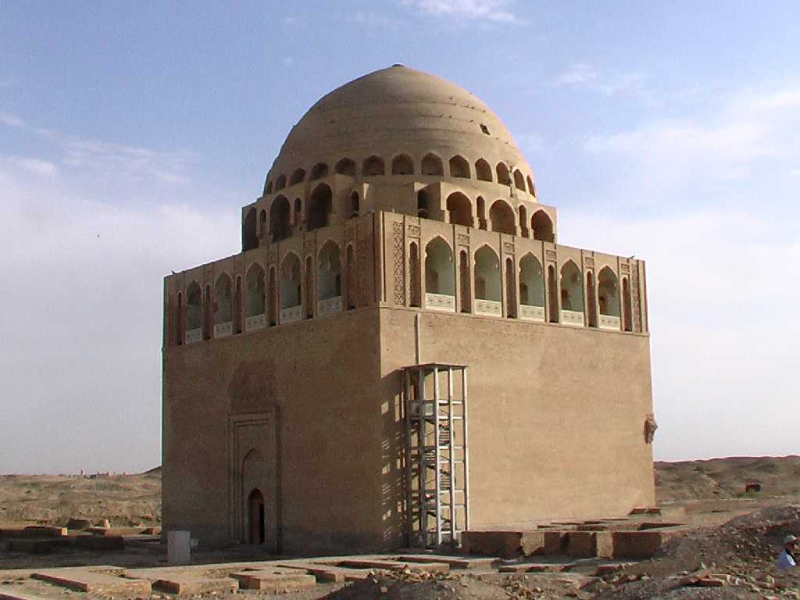
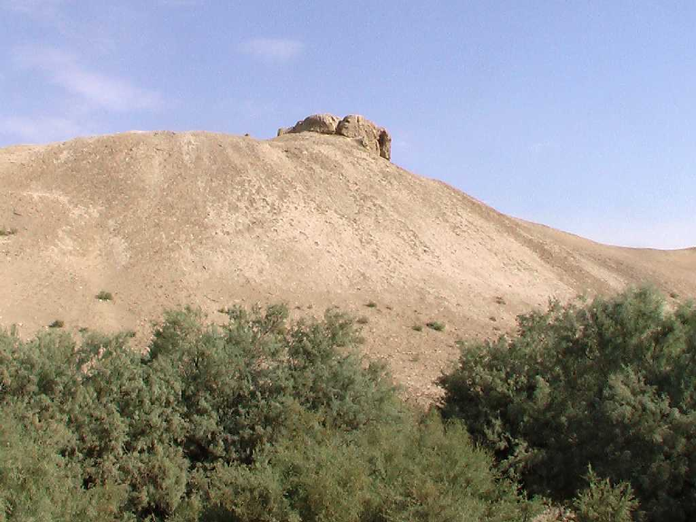
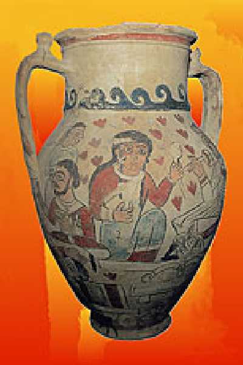

Great Kyz Kala Merv
紀元前６世紀ごろからアケメネス朝ペルシャのオアシス都市として繁栄した

Great Kyz Kala
大キズカラは高さ２０ｍもある日干し煉瓦造りであるがいまだに風雨に耐えている
Little Kyz Kala

Sultan Kala

Erk Kala
エルクカラから仏像と経文が発見され仏教の西端地と云われている

Pottery
September 26 2008 Merv